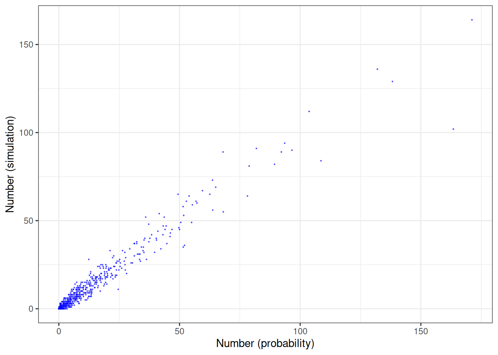
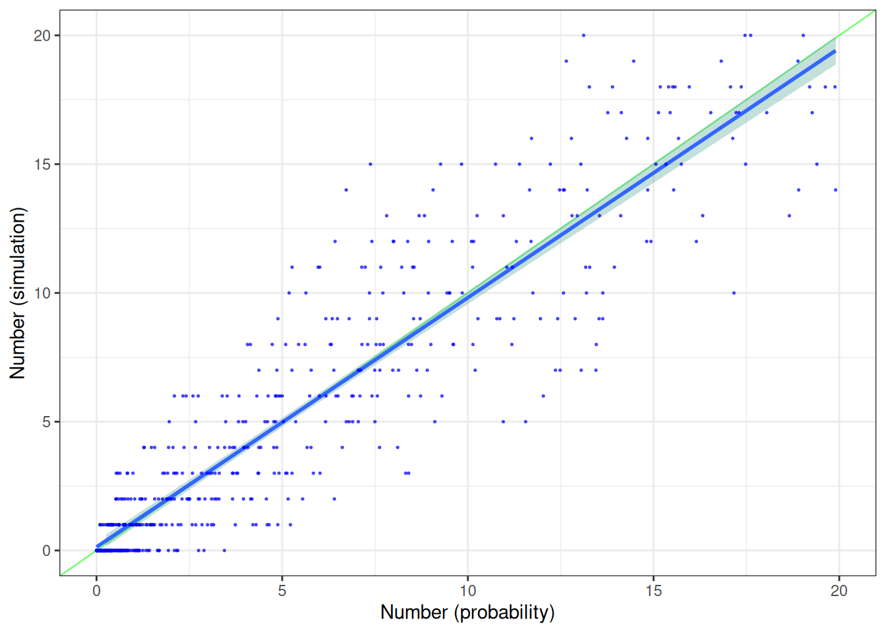
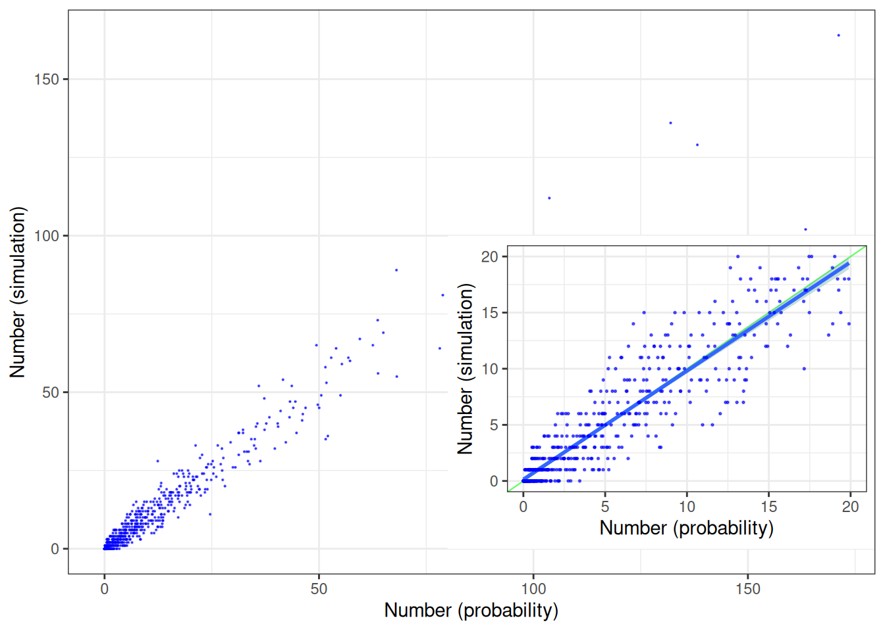

When initials collide (III)
A reality check
Introduction
The third post in a row. This rabbit hole is much deeper than we thought, and we were only exploring a simple case such far.
In the first post in this series we modified the code by Antoine Soetewey (“AS”) from Stats and R1 a bit to allow the probability of the first letters of a first and a family name to deviate from 1/26.
In the second post and based on data from Statbel2 we calculated the probability functions for first letters in first and family names in (a large part) of the Belgian population.
And now, based on the same data, we will calculate the probabilities of two-letter initials based on these probabilities and compare simulations to these.
Generating two-letter initials
Remember that in the first post we randomly selected the starting letter of the first name from the list of 26 letters. And again randomly selecting the the starting letter from the family name from the list of 26 letters. Obviously.
Let’s prepare for a small change that may save us some computational work when dealing later on with large numbers of simulations.
We directly take into account the fact that the number of two-letter combinations is in fact not that large, actually 676. And we can use the same approach as before, but now for directly selection the combination of two letters with a single random draw.
Let us first have a look into all possibilities. As in the previous post we could plot the fraction or probability vs the combination of two letters. As the number of different two-letter initials is that large enough to make it difficult to display as a barchart, we “stretch out” the x-axis and curve it into a circle and make a lollipop graph on a polar coordinates plot. In Figure 1 is plotted from the outside towards the center of the plot, the lollipop bubble showing the actual frequency. The green dashed circle corresponds to the probability of 0.1479 % (i.e. equal probabilities for all letters). The grey dotted circles refer to 0.5, 1.0, 1.5 and 2.0 % probabilities. Hence every lollipop ending up in the bull’s eye has certainly a higher probability than 2.0 %.

So a whopping 2.14 % of our population has as initials MV. In contrast to, for example, AS (0.64 %) and GH (0.16 %). But truly rare are the combinations QQ (1.93 ppm), ZX (1.13 ppm), XX (0.32 ppm), QX (0.29 ppm) and UX (0.23 ppm). Or a factor of about 90 000 different between the most and the least frequent letter combination.

So far we didn’t perform a simulation yet, did we? No, but it is coming.
However, let’s have look at the probability distribution in more detail. We will first do exactly the same as in the case with equal probabilities for the letters, eight persons, 1000 redraws and 100 repeats. Hmm. So we plan again to do 8 x 1000 x 100 = 800000 draws of two letters. We know that we have 676 combinations or bins of all letter combinations. So for equal letter probabilities we had on average about 1183 m&m’s in each bin (because of the equal probabilities).
Now we are facing a situation where these probabilities are not equal anymore. We have way more chance to draw MV (namely 17120 m&m’s in the MV bin) than AS (5120 m&m’s) and certainly more than UX (0.18 m&m, actually none). That’s not fair…
UX 2.3 10^{-7} or 1 in 4.3 million people. Or about two or three people on the whole population of Belgium, and we only plan to 800000 draws. Xu XHrouet Xhonneux Xia
The simulation
Let us anyhow perform the simulation as planned.
One further modification is needed if I want to use a different probability profile for the letters. I made some changes to the code but kept it such that a uniform letter probability can still be used as before, as a validation tool as well.
# ==============================================================================
# Simulation, allowing non-uniform distribution of letters
# ==============================================================================
# FUNCTIONS
# ------------------------------------------------------------------------------#
cmps_team_gh2 <- function(n_persons, df_p) {
#
# Draw a team: compose a team of n_persons, the GH way.
# Supply a dataframe with probabilities for all letters in df_p
# Output dataframe df contains one row with n_persons two-letter initials,
# and the last column is the percentage of unique initials in this team
# composition.
# Note that we do not use two random numbers but only one as we directly
# sample from the distribution of two-letter initials now.
#
team <- replicate(n_persons, NA)
for (i in 1:n_persons) {
#
# Draw the initials
#
urn <- runif(1)
check <- which(with(df_p, df_p$low <= urn & df_p$high > urn))
lttrs <- df_p$lttr[check]
team[i] <- lttrs
}
#
df <- team
df <- as.data.frame(t(df))
df$count <- apply(df,1,function(x) sum(!duplicated(x)))
df$count <- 100*df$count/n_persons
return(df)
}
# ------------------------------------------------------------------------------
#
# Define the probability distribution function
#
# All letters have equal probability of occurence in this case
#
df_p <- dp_initials[,1:2]
#
# Prepare to pass on to random draw
#
colnames(df_p) <- c('lttr', 'low')
df_p$high <- df_p$low
#
df_p[1,2] <- 0.00
df_p[676,3] <- 1.00
#
for (i in 2:676) {
j <- i-1
df_p[i,3] <- df_p[j,3]+df_p[i,2]
df_p[i,2] <- df_p[j,3]
}
#
# ------------------------------------------------------------------------------
#
# Set the number of persons in a team and the number of teams to be composed
# (= number of repeats)
#
n_persons <- 8 # number of persons per team [AS: 8]
n_teams <- 1000 # number of repeats (teams) [AS: 1000]
n_exper <-100 # number of experiments [AS: 100]
#
d_gh <- as.data.frame(matrix(data=NA, ncol=2, nrow=n_exper))
#
repro <- FALSE # set TRUE for reproducible random numbers
#
for (xp in 1:n_exper) {
#
# Set a seed and compose the first team
#
zaad <- xp
#
if (repro == TRUE) {
set.seed(zaad)
}
else
{
a=as.numeric(Sys.time())
set.seed(a)
}
teams <- cmps_team_gh2(n_persons, df_p)
#
# Fill up the teams dataframe with the remaining teams
#
for (i in 2:n_teams) {
team <- cmps_team_gh2(n_persons, df_p)
teams <- rbind(teams, team)
}
#
cnt_unique <- length(which(teams$count==100))
pct_multip <- 100*(1-cnt_unique/n_teams)
#
# Uncomment for writing csv data files per experiment
#
#flx <- paste0('exp_', formatC(xp, width=4, flag="0"))
#
#d_gh[xp, 1] <- flx
#d_gh[xp, 2] <- pct_multip
}
#
#n_gh <- length(d_gh)
#m_gh <- mean(d_gh[,2])
#s_gh <- sd(d_gh[,2])
#rsd_gh <- 100*s_gh/m_gh
#
# Can we count the number of occurences of each TLI
#
df_comp <- dp_initials[,1:2]
df_comp[,3] <- 0.0
#
for (i in 1:676){
cnt_tli <- length(which(teams[,1:8]==df_comp[i,1]))
df_comp[i,3] <- cnt_tli
}
df_comp[,2] <- 8000*df_comp[,2]
df_comp[,4] <- 100*(1-df_comp[,3]/df_comp[,2])
#
# plot simulated vs expected
#
pk <- ggplot(df_comp) +
geom_point(aes(x=Fraction, y=V3),color="blue", size=0.1, alpha=0.6) +
# geom_text(aes(x=Letter, y=Fraction, label=Letter), size=1, hjust = 0.5, vjust = -0.5) +
# geom_hline(yintercept=prob, colour='green', linetype='dashed', size=0.2) +
# geom_hline(yintercept=ref1, colour='grey50', linetype='dotted', size=0.2) +
# geom_hline(yintercept=ref2, colour='grey50', linetype='dotted', size=0.2) +
# geom_hline(yintercept=ref3, colour='grey50', linetype='dotted', size=0.2) +
# geom_hline(yintercept=ref4, colour='grey50', linetype='dotted', size=0.2) +
# scale_y_continuous(limits = c(0, 15)) +
# scale_x_discrete(guide = guide_axis(n.dodge=2))+
# scale_x_discrete(guide = guide_axis(check.overlap = TRUE))+
ylab("Number (simulation)") +
xlab("Number (probability)") +
# scale_y_reverse() +
# coord_flip() +
# coord_polar() +
theme_bw()
# theme(panel.background = element_rect(fill = 'white', colour = 'white'))
# theme(axis.title.x=element_text(colour="black"),
# axis.title.y=element_text(colour="black"),
# axis.text.x=element_text(colour="black"),
# axis.text.y=element_text(colour="black", size=1)
# )
#
# theme(axis.title.x=element_blank(),
# axis.title.y=element_blank() #,
# axis.text.x=element_text(colour="black"),
# axis.text.y=element_text(colour="black", size=1)
# )
pk
#
ggsave("img/chunk17.png", pk, width=10, height=10, units = "cm", dpi=1200)
#ggsave("img/chunk03_1_thumb.png", box, width=6.40, height=3.60, units = "in", dpi=100)
#
pk#
# let's have some more detail in ll
#https://stackoverflow.com/questions/68048196/what-does-se-stand-for-in-geom-smooth-se-false
pl <- ggplot(df_comp) +
geom_abline(intercept = 0, slope = 1, color="green", size=0.4, alpha=0.6) +
geom_smooth(aes(x=Fraction,y=V3), method="lm", fill="#69b3a2", se=TRUE) +
geom_point(aes(x=Fraction, y=V3),color="blue", size=0.3, alpha=0.6) +
scale_y_continuous(limits = c(0, 20)) +
scale_x_continuous(limits = c(0, 20)) +
ylab("Number (simulation)") +
xlab("Number (probability)") +
# scale_y_reverse() +
# coord_flip() +
# coord_polar() +
theme_bw()
#
pl
#
pm <- pk +
annotation_custom(ggplotGrob(pl), xmin = 80, xmax = 180,
ymin = 0, ymax = 100)
#
pm
ggsave("img/chunk17a.png", pm, width=10, height=10, units = "cm", dpi=300)
#Calculate slope and intercept of line of best fit
koef <- coef(lm(V3 ~ Fraction, data = df_comp))
#
reg<-lm(V3 ~ Fraction, data = df_comp)
coeff<-coefficients(reg)
koef(Intercept) Fraction
0.588947 0.950234 coeff(Intercept) Fraction
0.588947 0.950234 lmodel <- lm(V3 ~ Fraction, data = df_comp)
summary(lmodel)
Call:
lm(formula = V3 ~ Fraction, data = df_comp)
Residuals:
Min 1Q Median 3Q Max
-53.907 -1.356 -0.613 1.403 23.734
Coefficients:
Estimate Std. Error t value Pr(>|t|)
(Intercept) 0.588947 0.186208 3.163 0.00163 **
Fraction 0.950234 0.008201 115.864 < 2e-16 ***
---
Signif. codes: 0 '***' 0.001 '**' 0.01 '*' 0.05 '.' 0.1 ' ' 1
Residual standard error: 4.132 on 674 degrees of freedom
Multiple R-squared: 0.9522, Adjusted R-squared: 0.9521
F-statistic: 1.342e+04 on 1 and 674 DF, p-value: < 2.2e-16geom_smooth(aes(x,y), method="lm", se=F)mapping: x = ~x, y = ~y
geom_smooth: na.rm = FALSE, orientation = NA, se = FALSE
stat_smooth: na.rm = FALSE, orientation = NA, se = FALSE, method = lm
position_identity #<!--
#Based on the data from this modified code, a mean of `r .QuartoInlineRender(round(m_gh,digits=2))` #% is observed, with a standard deviation of `r .QuartoInlineRender(round(s_gh,digits=2))` %. Again, #taking into account the random nature of the process, pretty much the same #result as AS.
#-->